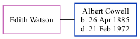

Edith Watson, the wife of Albert William Cowell (the third cousin twice-removed on the mother's side of Nigel Horne), and married Albert (a shipwright) in Medway, Kent, England around May 19121.
Citations
England & Wales marriages 1837-2008 - Findmypast
Family Tree

Generated by ged2site. Last updated on Nov 13, 2024